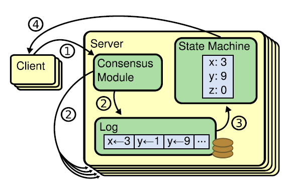
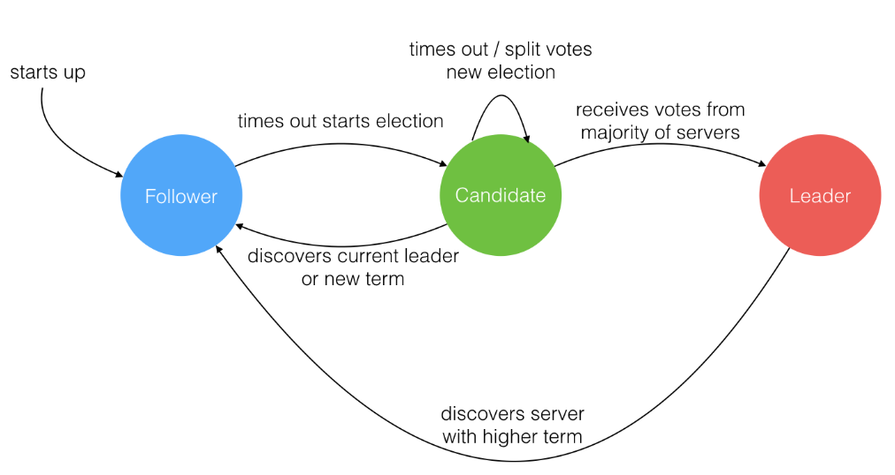
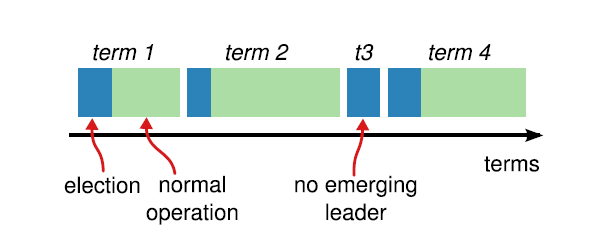
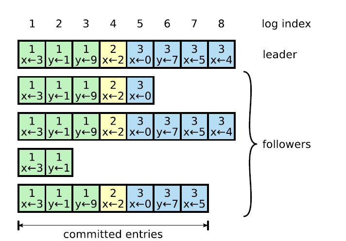
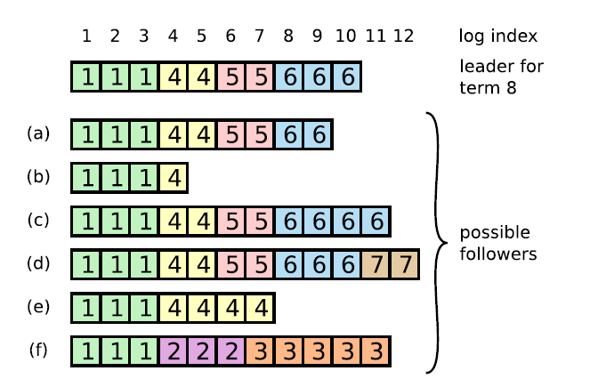
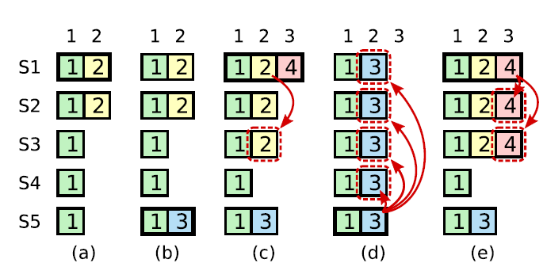
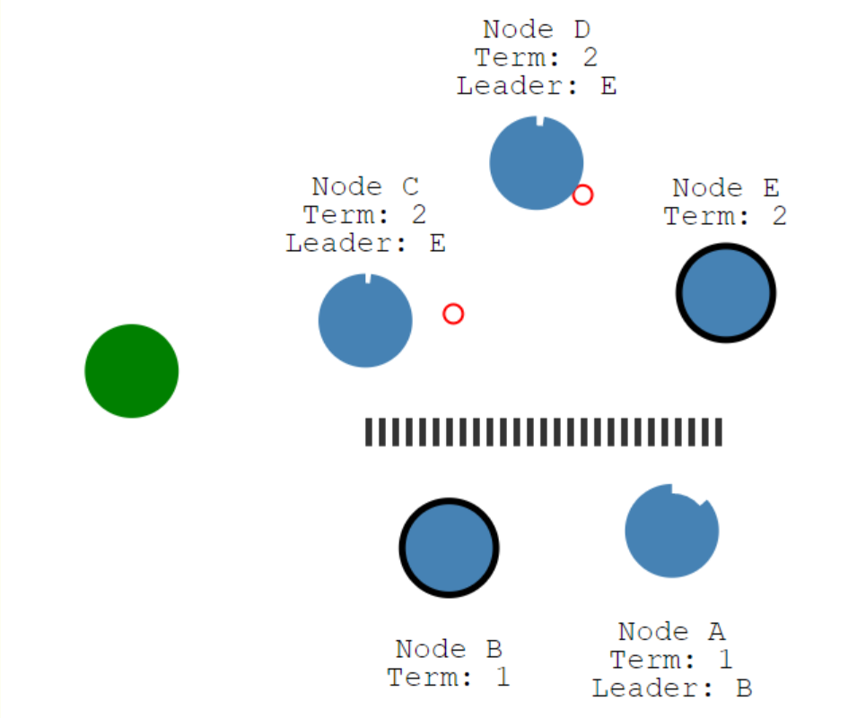
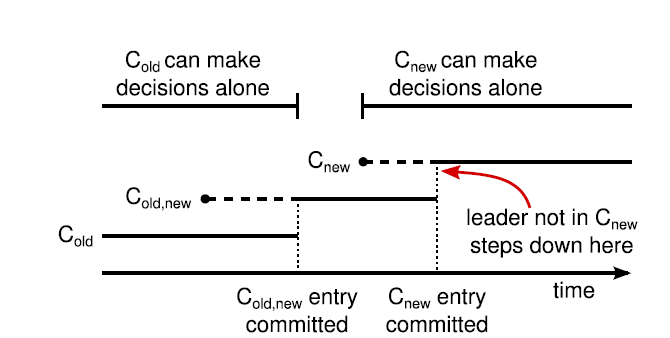

Raft是著名的分布式一致性算法，学一学不会吃亏，看一看不会上当，嗯。
参考
解读Raft（一 算法基础）
解读Raft（二 选举和日志复制）
解读Raft（三 安全性）
解读Raft（四 成员变更）
Raft协议处理各种failover情况
通过 raft 的 leader lease 来解决集群脑裂时的 stale read 问题
raft论文
强烈推荐动图演示raft过程
一文搞懂Raft算法
raft中文翻译
Raft是著名的分布式一致性协议，有感于paxos在理解上和实现上的复杂程度，raft设计的初衷便是在保证一致性的同时，尽可能的简洁易懂、易于实现。下面本文将会从七个方面介绍raft算法：
算法基础
什么是分布式一致性
当前大公司都会使用一个集群来处理相关事务。一个集群是指一群计算机的集合，在这个集群里，承担计算和记录任务的计算机统一称为server。为了防止数据丢失或者机器故障导致系统服务不可用，同一份数据会被记录到不同的server上，随之而来的便是一致性问题：如何保证多台机器上记录的数据是相同的？
在介绍如何使得集群达成一致性之前，我们首先明确集群中server的特点。一般而言，我们可以把server假设成状态机。对于状态机而言，当输入确定时，输出也随之确定，换言之，如果多台状态机以相同顺序执行相同指令，那么他们最终达到的状态便是一致的。因此一致性问题又可以转化成，保证多台server执行的指令和执行指令的顺序是一样的。

Raft是管理日志的一致性算法，论文中的log代表记录任务的日志，entries可以看成是需要执行的任务或者指令，保存在log中。Raft的一致性本质上是log的一致性，只要保证集群中所有server的log相同，那么他们所执行的指令和执行指令的顺序也相同，根据状态机的理论可知，此时集群中的server保证了数据和操作的一致性。那么，Raft是如何保证log的一致性的呢？在介绍这点之前，我们首先介绍集群中server所能扮演的角色和实现raft所必需的一些数据结构。
角色
在介绍raft实现log一致性的方法之前，我们首先介绍raft中server所能担任的三种角色：
- leader：在一个集群中，有且只有一个leader，是集群中唯一一个能与client通信的server，所有client发起的entries（任务）都必须经过leader调度，然后才同步到其他server中。
- candidate：当集群中的leader宕机或者集群刚开始运行时，部分server可以将自身状态调整为candidate并竞选leader。
- follower：负责相应来自leader或者candidate的请求。
角色转换图如下：

角色转换规则如下：
- 集群中所有server在刚开启时都是follower状态。
- 每个follower随机化一个election timeout，如果在这个时间内没有收到来自leader的信息，则转为candidate向其他机器发送竞选请求。
- 一个candidate收到绝大多数节点(一般是N/2+1)的投票则转为leader；如果发现集群中存在leader或者收到更高任期的请求，则转换为follower。
- 如果出现网络分区，导致每个集群中存在两个leader，则网络分区恢复后，任期较低的leader转为follower。 、
任期
raft架构中，leader与client交互并且负责log调度的时间总长称为任期，当出现各种原因导致leader宕机后，集群中选出新leader的同时更新任期的编号，一般而言，任期编号是递增的。

每个任期都由一次选举开始，若选举失败则这个任期内没有Leader；如果选举出了Leader则这个任期内由Leader负责集群状态管理。
选举失败的可能原因：同时有三台机器成为candidate，并且各获得了三分之一server的支持，因为没有一个candidate得到了绝大多数(N/2+1，自己会投给自己，别把自己这一票忘了)机器的支持，所以这一次election没有选举出新的leader，结束这一轮的term。当有server的election timeout到时后，会成为新的candidate发起新一轮竞选。此时election timeout随机化的好处就体现出来了，因为每一次必定有一台机器先于其他机器结束定时并且发起leader竞选，可以防止陷入无限竞争的死循环中，。
信息交互
leader和client相互交换的信息如下：
状态
| 状态 | 所有节点上持久化的状态（在响应RPC请求之前变更且持久化的状态） |
|---|---|
| currentTrem | 服务器的任期，初始为0，递增 |
| votedFor | 本server的投票对象（比如本节点投票给B，则votedFor=B） |
| log[] | 日志条目集，每一个条目包含一个状态机需要执行的指令，以及该指令对应的任期编号 |
| 状态 | 所有节点上非持久化的状态 |
|---|---|
| commitIndex | 最大的已经被commit的entries对应的log index |
| lastApplied | 最大的已经被应用到状态机的index |
| 状态 | Leader节点上非持久化的状态（选举后重新初始化） |
|---|---|
| nextIndex[] | 每个节点下一次应该接收的日志的index（初始化为leader节点最后一个entries对应的log index+1） |
| matchIndex[] | 每个节点已经复制的日志的最大索引（初始化为0，之后递增） |
AppendEntries RPC
AppendEntries RPC是leader发送给所有follower节点的心跳信息，用来确保follower存在。当client提交新任务时，leader会通过AppndEntries来传递日志给follower。
|参数|含义|
|:—:|:—:|
|term|当前Leader节点的任期|
|leaderId|Leader节点的ID（IP地址）|
|prevLogIndex|此次追加请求的上一个日志的索引|
|prevLogTerm|此次追加请求的上一个日志的任期|
|entries[]|追加的日志（空为心跳请求）|
|leaderCommit|leader上已经commit的entries对应的log编号|
prevLogIndex和prevLogTerm表示上一次发送的日志的索引和任期，用于保证收到的日志是连续的。
| 返回值 | 含义 |
|---|---|
| term | 当前任期号，用于leader更新自己的任期（如果返回值的term比leader自身的任期大，表明该leader是从网络分区中恢复过来的leader，应该转为follower) |
| success | 如果follower节点匹配prevLogIndex和prevLogTerm，表明此次请求前的entries匹配，返回true |
接受者逻辑：
- 返回false，如果收到的任期比当前任期小。
- 返回false，如果不包含之前的日志条目（没有匹配prevLogIndex和prevLogTerm）。
- 如果存在index相同但是term不相同的日志，表明该entries可能是上一个term留下的，删除从该位置开始所有的日志。
- 追加所有不存在的日志，用于leader同步新增加的节点。
- 如果leaderCommit>commitIndex，将commitIndex设置为commitIndex = min(leaderCommit, index of last new entry)。（详见下面日志复制）
RequestVote RPC
用于candidate获取选票。
|参数|含义|
|:—:|:—:|
|term|candidate的任期|
|candidateId|candidate的ID（类似ip地址）|
|lastLogIndex|candidate最后一条日志的索引|
|lastLogTerm|candidate最后一条日志的任期|
| 返回值 | 含义 |
|---|---|
| term | 当前任期，用于candidate更新自己的任期 |
| voteGranted | true表示i给candidate投票 |
接受者逻辑：
- 返回false，如果candidate发送的任期比follower当前任期小。
- 如果本地状态中votedFor为null或者candidateId，且candidate的日志等于或多于（按照index判断）接收者的日志，则接收者投票给candidate，即返回true。如果candidate的日志小于follower的日志，那么返回false，这样可以保证保持有较多较完整已经commit的log的follower成为新的leader。（当然，如果10台机器中，有7台机器没有commit修改，有3台机器commit了修改，最终的leader可能是那7台机器中的一台，因为他也能得到超过半数机器的支持。）
节点的执行规则
所有节点
- 如果commitIndex > lastApplied，应用log[lastApplied]到状态机，增加lastApplied。先commit，后执行，2次交互，方便回滚。
- 如果RPC请求或者响应包含的任期T > currentTrem，将currentTrem设置为T并转换为Follower。一般是网络分区恢复后，旧leader检测到集群中的新leader，将自己修改为follower。
Follower
- 相应来自leader和candidate的RPC请求。
- 如果在选举超时周期内没有收到AppendEntries的请求或者给candidate投票，将自己转换为candidate角色。
Candidate
- election timeout超时后，follower将自己转为candidate。
- 递增currentTerm。
- 给自己投票。
- 重值election timeout（是一个随机值，一般150ms到500ms之间）。
- 发送RequestVote给其他所有节点。
- 如果收到绝大多数机器的投票，转化为leader。
- 如果收到Leader的AppendEntries请求，转换为follower。
- 如果选举超时，重新开始新一轮的选举。
Leader
- 一旦选举完成：发送心跳给所有节点；在空闲的周期内不断发送心跳保持Leader身份。
- 如果收到客户端的请求，将日志追加到本地log，在日志被应用到状态机后响应给客户端。
- 对于一个follower，如果其最后日志条目的索引值大于等于 nextIndex，那么，发送从 nextIndex 开始的所有日志条目：
- 如果成功：更新相应follower的 nextIndex 和 matchIndex。
- 如果因为日志不一致而失败，减少 nextIndex 重试。
- 如果存在一个满足N > commitIndex的 N，并且大多数的matchIndex[i] ≥ N成立，并且log[N].term == currentTerm成立，那么令commitIndex等于这个N。
日志复制
请求流程
client发起一次修改的流程如下：
- leader将本次修改同步给follower，注意，此时这次修改并未写入leader的log。
- follower接收到leader的修改后，将修改写入本次的log，给leader发送commit信号，但是还未执行。
- leader接收到超过绝大多数（一般是N/2+1）个follower的回复，表示有绝大多数follower都同步了这条指令，于是将这条指令写入leader的log。
- leader将这次修改commit给client，表明收到。
- leader再次给所有follower发送信息，表明这次修改已经commit。
- follower接收到leader的信息，执行这一次修改。
log matching
Raft算法保证所有committed的日志都是持久化的（日志需要在大多数节点上持久化之后再响应给客户端，这意味着每个Follower节点收到AppendEntry请求后需要持久化到日志之后再响应给Leader），且最终会被所有的状态机执行。
Raft算法保证了以下特性：
- 如果两个日志条目有相同的index和term，那么他们存储了相同的指令（即index和term相同，那么可定是同一条指令，就是同一个日志条目）。
- 如果不同的日志中有两个日志条目，他们的index和term相同，那么这个条目之前的所有日志都相同。
首先，leader在某一term的任一位置只会创建一个log entry，且log entry是append-only。其次，consistency check。leader在AppendEntries中包含最新log entry之前的一个log 的term和index，如果follower在对应的[term,index]找不到相应的日志，那么就会告知leader不一致。leader稍后会修改nextIndex后重发appendEntries，重复这个过程，直到找到follower与leader匹配的entry为止。
两条规则合并起来的含义：两个日志LogA、LogB，如果LogA[i].index==LogB[i].index且LogA[i].term==LogB[i].term，那么LogA[i]==LogB[i]，且对于任何n < i的日志条目，LogA[n]==LogB[n]都成立。（这个结论显而易见的可以从日志复制规则中推导出来）。
这两条特性是通过prevLogIndex、prevLogTerm和nextIndex，以及新的term阶段，leader覆盖folower的日志来保证的。

日志组织形式如上图所示，每个日志条目中包含可执行的指令,和日志被创建时的任期号，日志条目也包含了自己在日志中的位置，即index。根据raft的保证，不同server上相同log编号和相同任期的entries必定是相同的。可以把任期看成是国号，比如唐宋元明清，log编号看成是公元历，entries看成是皇帝，一个任期（国号）内有许多个entries（皇帝），当leader宕机后，这个任期结束，新的任期开始。任期之间有先后关系，比如宋在唐之后，以此来确定任期之间的优先级（越往后越高级），同时他们也有对应的公元年编号。根据任期编号（唐）和公元年编号（731年）可以判断出，这个entries（皇帝）是唐玄宗。
问题：
参考Raft协议处理各种failover情况
看完参考链接之后，自己写博客时，可以针对客户提交一次修改的流程，穷举所有机器故障的情况，并尝试回答raft是如何保持一致性的状态，借此可以检验自己是不是真的理解了。
如果这次修改没有得到超半数的follower回应怎么办？
答：对于已经将本次修改写入log的少数follower，会根据下一次leader发送的appendEntries信息中的prevLogIndex、prevLogTerm和LeaderCommit来回滚数据。
如果leader接收到client的修改，但是还未给follower发出修改就宕机了怎么办？
答：此时剩下的机器处于一致性的状态，election timeout超时后会重新选出新的leader，client在没有接收到leader的回复时，会再次发出请求。
如果所有follower都接收到修改请求，但是leader宕机怎么办？
答：此时follower中的log保持一致性的状态，重新选出新的leader即可。
如果只有部分follower接收到修改请求，但是leader宕机怎么办？
答：有两种可能。
第一，如果超过半数follower已经接受了修改请求，那么根据raft选举leader的规则，必然是写入了新请求的follower成为新的leader（详见下面leader选举）。选出新leader后，会将本次修改同步到其余未接到修改请求的follower。因为raft要求client的修改请求拥有幂等性，也就是会自动去除重复的请求，所以leader直接commit本次修改即可。
第二，如果只有小部分（小于N/2+1）follower接收到修改请求，那么会产生一种不确定的状态。此时有可能是接收到请求的follower成为新的leader，就和第一种可能一样；但是也有可能是没有接收到请求的follower成为新的leader，此时新的leader会要求接收到请求的follower回滚log。然后新的leader会接收到client的请求，重复执行修改的流程。如果出现了网络分区，并且旧的leader在少数机器那一部分分区中？
答：此时占绝大多数机器的分区会重新决出leader，然后根据1234的情况执行策略。等网络分区回复，旧leader发现存在新leader后，将自己变为follower（appendEntries的返回值）。
一次修改中，leader和follower需要进行两次信息交互，第一次是follower commit，第二次是follower执行指令，如果所有follower都commit了指令，但是leader宕机时，有的follower执行了修改请求，有的没有执行，怎么办？
答：请注意，raft是更改日志的一致性协议，重点在于日志上，而不在于是否执行上。只要修改存在于日志中，那就会执行，若不存在就不执行，由lastApplied来记录最后一个执行的指令，就这么简单。因此是否执行可以转化为是否commit，而是否commit就是前面1-5的情况。
leader选举
选举流程
leader通过发送appendEntries来保持leader的角色。每个follower在收到一个appendEntries（心跳信号，有时也附加修改请求）后，会随机初始化election timeout，如果在timeoue之内没有接收到来自leader的心跳信号，该follower会认为leader已经宕机，自身转为candidate状态开始竞选leader。
选举流程如下：
- Follower递增自己的任期并设置为Candidate角色。
- 投票给自己并且随机初始化新的election timeout。
- 并发的给所有节点发送投票请求。
- 保持Candidate状态直到：
- 同一个任期内获得大多数选票，成为Leader（一个节点在一个任期内只能给一个Candidate投票，任期相同则选票先到先得）并给其他节点发送心跳来保持自己的角色。
- 收到其他节点的RPC请求，如果请求中的任期大于等于Candidate当前的任期，认为其他节点成为了Leader，自身转换为Follower；如果其他节点的任期小于自身的任期，拒绝RPC请求并保持Candidate角色。
- election timeout超时后仍旧没出现Leader（可能是出现了平票的情况），则重新发起新一轮选举（递增任期、发送投票请求）。
为了避免平票的问题，同时在出现平票的情况后能快速解决，Raft的选举超时时间是在一个区间内随机选择的（150~300ms）。这样尽量把服务器选举时间分散到不同的时间，保证大多数情况下只有一个节点会发起选举。在平票的情况下，每个节点也会在一个随机时间后开始新一轮选举，避免可能出现的一直处于平票的情况。
异常处理

一个新Leader被选举出来时，Follower可能是上图中的任何一种情况。
- (a)(b)可能还没复制到日志。
- (c)(d)可能曾经是Leader，所有包含了多余的日志（这些日志可能被提交了，也可能没提交）。
- (e)可能是成为Leader之后增加了一些日志，但是在Commit之前又编程了Follower角色，且还没有更新日志条目。
- (f)可能是在任期2称为了Leader并追加了日志但是还没提交就Crash了，恢复之后在任期3又成了Leader并且又追加了日志。
在Raft中，通过使用Leader的日志覆盖Follower的日志的方式来解决出现像上图的情况（强Leader）。Leader会找到Follower和自己想通的最后一个日志条目，将该条目之后的日志全部删除并复制Leader上的日志。详细过程如下：
- Leader维护了每个Follower节点下一次要接收的日志的索引，即nextIndex。
- Leader选举成功后将所有Follower的nextIndex设置为自己的最后一个日志条目+1。
- Leader将数据推送给Follower，如果Follower验证失败（nextIndex不匹配），则在下一次推送日志时缩小nextIndex，直到nextIndex验证通过。
leader同步follower的log的做法是，用leader的log覆盖follower的log，但不是单纯的把leader所有的log发给follower，因为这不现实，一般系统运行一段时间后，log非常非常大，传输整个log极其占带宽。相反，raft选择从最新确认的entry开始回溯对比，找到第一个不匹配的entry编号，然后用leader的log覆盖follower那一点之后所有的log记录。
安全性
选举限制
在Raft协议中，所有的日志条目都只会从Leader节点往Follower节点写入，且Leader节点上的日志只会增加，绝对不会删除或者覆盖。
这意味着Leader节点必须包含所有已经提交的日志，即能被选举为Leader的节点一定需要包含所有的已经提交的日志。因为日志只会从Leader向Follower传输，所以如果被选举出的Leader缺少已经Commit的日志，那么这些已经提交的日志就会丢失，显然这是不符合要求的。
这就是Leader选举的限制：能被选举成为Leader的节点，一定包含了所有已经提交的日志条目。
回看算法基础中的RequestVote RPC：
|参数|含义|
|:—:|:—:|
|term|candidate的任期|
|candidateId|candidate的ID（类似ip地址）|
|lastLogIndex|candidate最后一条日志的索引|
|lastLogTerm|candidate最后一条日志的任期|
返回值：
|参数|含义|
|term|当前任期，用于candidate更新自己的任期|
|votedFor|本server的投票对象（比如本节点投票给B，则votedFor=B）|
请求中的lastLogIndex和lastLogTerm即用于保证Follower投票选出的Leader一定包含了已经被提交的所有日志条目：
- Candidate需要收到超过半数的节点的选票来成为Leader。
- 已经提交的日志条目至少存在于超过半数的节点上。
- 那么这两个集合一定存在交集（至少一个节点），且Follower只会投票给日志条目比自己的“新”的Candidate，那么被选出的节点的日志一定包含了交集中的节点已经Commit的日志。
日志比较规则（即上面“新”的含义）：Raft 通过比较两份日志中最后一条日志条目的索引值和任期号定义谁的日志比较新。如果两份日志最后的条目的任期号不同，那么任期号大的日志更加新。如果两份日志最后条目的任期号相同，那么日志比较长的那个就更加新。
日志提交限制

上图按时间序列展示了Leader在提交日志时可能会遇到的问题:
- 在(a)中，S1是Leader，任期为2，索引位置2的日志条目仅缓存在S2上。
- 在(b)中，S1崩溃了，然后S5在任期3里通过S3、S4和自己的选票赢得选举，然后从客户端接收了一条不一样的日志条目放在了索引2处。
- 然后到(c)，S5又崩溃了；S1重新启动，选举成功，复制索引2处的日志到S3。这时，来自任期2的那条日志已经被复制到了集群中的大多数机器上，但是还没有被提交。
- 如果S1在(d)中又崩溃了，且S5重新被选举成功（通过来自S2，S3和S4的选票，因为S5索引处的日志是任期3，大于S234索引2处的任期2。），然后覆盖了他们在索引2处的日志。反之，如果在崩溃之前，S1把自己主导的新任期里产生的日志条目复制到了大多数机器上，就如(e)中那样，那么在后面任期里面这些新的日志条目就会被提交（因为S5就不可能选举成功）。 这样在同一时刻就同时保证了，之前的所有老的日志条目都会被提交。
出现上图(c，d)情况，造成已经被大多数（超过N/2+1）个节点commit的log（可能已经执行了）回滚的原因是，在term4中仅仅是复制了term2的entry。因此，在(c)S1宕机之后，因为S5最后一个entry的term大于S2,S3的term，使得S5竞选成功并且覆盖已经被大多数节点commit了的term2信息。
Raft never commits log entries from previous terms by counting replicas.
Only log entries from the leader’s current term are committed by counting replicas; once an entry from the current term has been committed in this way, then all prior entries are committed indirectly because of the Log Matching Property.
raft对此的解决方案是，每一个新的任期内，不会只同步之前任期的日志，而是在同步当前任期日志的同时同步之前任期的日志。什么意思呢？比如上图，在(c)处，进入term4之后，S1不会只同步之前term2的日志，而是会在同步term4的日志的同时，顺便同步term2的日志，这样一来就会变成(e)的情况，而(c)中的情况，只同步了term2却没有同步term4日志的情况根本就不会发生。因此，在raft下，在上图(b)之后，如果S1再次成为leader，进入term4，此时S1开始同步term4的日志，就会变成图(e)的情况，根本不会出现(c)的情况。如果S1在此之后挂了，S5根本不可能成为新的leader，因为S5最后一个日志的term小于S2S3的term。
问题来了，如果进入新任期后，没有收到client新的信息呢？此时没有日志需要同步，连带着此前term的日志也不会同步。
raft的解决方法是，在进入新任期后，立即同步一个为空的日志。这样就可以带动之前未同步的日志进行同步了。
stale leader

网络分区后，在少部分机器中的旧leader，因为得不到超过半数机器的commit，所以不能执行任何写请求。但是，可以执行读请求，这时候有可能会返回已经过期的信息。解决方法是通过 raft 的 leader lease 来解决集群脑裂时的 stale read 问题。
成员变更
初步理解
以上leader选举、日志复制和安全性的分析都是建立在集群中server总数不变的前提下的。然而，众所周知，在集群真正运行过程中，会有机器不停的离开集群，也会不停地往集群中加入新的机器。因此，成员变更也是一致性算法至关重要的组成部分。注意，成员变更和由于故障或者重启导致的server上下线不同，成员变更是会改变系统注册的成员数量，影响“绝大多数”这一概念的判定，也就影响leader选举和commit的成败。
成员变更有许多种方法，然而不论是哪一种方法，都需要先将新成员加入到集群中，让集群中其他机器了解到新成员的存在，然后将集群中的日志复制给新成员，保持和leader的一致性。一种最直接的实现方法，就是在新成员加入时，停止集群的运行，待将集群中的日志完全复制到新成员后，再重新启动新集群。这种方法缺点很明显，会在新成员加入时使得集群不可用。
声明：网上的各种博客千篇一律，基本都是将原文翻译了一遍，然而说的都不太明白。这里仅仅是我刚看完论文和网上博客后的粗浅理解，不准确，等我做完lab2，有了实践经验再回来补充。
首先明确成员变更的含义，新加入的server不止一台，同时成员更新不仅意味着加入新的机器，也意味着删掉旧的机器（所以当前的leader有可能是位于要删掉的机器列表中）。此时显而易见的问题是，我们如何让新集群中的机器知道新集群有哪些机器（用于竞选leader）？
论文中的“配置”，可以看成是“集群中运行的机器集合”。
Raft提出了一种过渡阶段，joint consensus，用于逐步同步旧集群中的数据到新集群中去。在joint consensus状态下，集群有如下特性：
- 日志被提交给新老配置下所有的节点。
- 新旧配置中所有机器都可能称为Leader。
- 达成一致（选举和提交）要在两种配置上获得超过半数的支持。
具体切换过程如下：
- Leader收到C-old到C-new的配置变更请求时，创建C-old-new的日志并开始复制给其他节点（和普通日志复制没有区别）。
- Follower以最新的配置做决定（收到C-old-new后就以C-old-new来决定），Leader需要以已经提交的配置来做决定（即只有C-old-new复制到大多数节点后Leader才以这个配置做决定）；这个时候处于一个共同决定的过程。
- 之后提交C-new到所有节点，一旦C-new被提交，旧的配置就无所谓了。

要明白raft的成员变更，只需要弄明白C-old和C-new的含义，C-old-new和C-new发送的时机和commit的时机，然而网上博客都说得挺含糊的。
这里有几个注意的地方,首先C-old-new和C-new就是普通的写入log的日志，其作用是通知收到该日志的机器，现在集群开始进入成员变更状态。而C-new这条日志的作用在于，告诉新集群中的机器，成员变更完毕。
我们假设：
- 旧集群机器集合为S
- 旧集群中需要下线的机器集合为D，D是S的一个子集
- 旧集群中保留到新集群的机器为U=S-D
- 新加入的机器集合为N
- 显而易见，新集群T=S+N-D
我们来思考一下，为什么C-old-new需要持续一段时间呢？我的理解是，由于新加入的机器不止一台，因此新集群的加入是一个过程的。我们需要通知旧集群中保留的机器U，新集群的机器数量和联系方式（比如IP地址）；同样的，我们需要告诉新集群N，旧集群中保留下来的机器集合U的联系方式，这是一个过程，不是一蹴而就。
而此时leader的作用在于统计有哪些机器已经知道了新集群。当一台机器commit了C-old-new时，leader就明白这台机器已经知道开始成员变更了，等到大多数都回复C-old-new时，leader就知道新集群中的机器大部分都知道了新伙伴的地址，于是leader就commit C-old-new指令（所以在成员变更时，leader应该会知道新加入的机器有多少台？不然怎么判断“绝大多数”这个概念），当leader收到所有新集群的机器的C-old-new时（？不确定是不是收到所有，论文和网上博客都说不明白什么时候发送C-new），leader判断新集群的所有节点都知道了新集群的存在和彼此的联系方式，然后就发送C-new指令，告知新集群，正式启用新集群。然后收到半数commit之后，正式转为新集群。如果leader是处于要下线的机器集合D中，那么leader在commit C-new之后就下线，新集群开始新的leader竞选。
commit Cnew后，表示新集群中的机器都相互认识了，正式开始使用新集群，旧集群就不管了。
成员变更的问题
大部分来自于这里
如果当前leader是处于要下线的集合中怎么办？
答：当前leader发送C-old-new和C-new，当commit C-new之后下线即可。注意，如果leader是下线的机器，那么C-old-new中做决定时，“绝大多数”不包含他自身。
如果leader crash怎么办？
答：要分C-old-new和C-new两个阶段，每个阶段又分两种情况，但是都一样的，以C-new阶段为例：
第一种情况是C-new指令已经分发到大多数节点上，此时leader挂掉，开始新一轮竞选，显然，根据raft竞选限制，只有含有C-new指令的机器才能成为新的leader，然后继续C-new就行。
第二种情况是C-new指令只分发到少部分节点上，这时候含有C-new和不含有C-new的节点都有可能成为leader，含有C-new的节点成为leader和第一种情况一样；另一种情况则是发现C-old-new已经commit了，重新开始C-new即可，结果和第一种情况一样。旧节点下线后收不到心跳信息，触发选举，发送请求给C-old-new中的节点怎么办？
答：为了防止删除掉的机器因接收不到leader的心跳而开启竞选。follower将会忽略在接收到leader心跳信息后，第一个election timeout内的竞选请求。换言之，之前的设计是，follower在一个election timeout后，变成candidate竞选；现在是一个timeout后，再开始新的timeout，第二个timeout超时才会竞选，并且在第二个timeout内收到竞选请求才会投票，在第一个timeout内收到的竞选请求则会忽略。只要减少election timeout的选择范围，就不影响正常的竞选。比如原来的timeout是10s，现在将timeout改为5s，貌似不会影响。
现在仔细想想，之前还挺容易竞争的。如果因为一点延迟，使得AppendEntries没有到达一个follower，但是其他节点都收到心跳信息。此时这个没收到信息的follower变成集群中新的且是唯一的candidate，并且其term还大于当前的leader，那这个节点不就能很快竞选为新的leader了吗。也就是说，如果有一点网络延迟造成某个节点收不到心跳信息但其他节点都收到了，那就会造成一次term切换。所以系统是建立在几乎不会丢失心跳信息上的？或者是election timeout远大于一个心跳时间，保证election timeout大于多个心跳信号？The broadcast time should be an order of magnitude less than the election timeout so that leaders can reliably send the heartbeat messages required to keep followers from starting elections;
果然原文中也表示心跳时间要比选举时间小一个数量级。
新的服务器没有任何数据，加入进来进来怎么保证系统的可用性（这个时候新日志没办法Commit就没办法响应给客户端）？
答：新加入的节点需要时间复制数据，在这个过程完成之前，Raft采用以下机制来保证可用性：新加入节点没有投票权（Leader复制日志给他们，但是不将他们考虑在机器数量里面——即在判断是否超过半数时不把这些节点考虑在内），直到这些节点的日志追上其他节点。
客户端交互
以下来自这里
Raft 中的客户端发送所有请求给领导人。当客户端启动的时候，他会随机挑选一个服务器进行通信。
- 如果选择的服务器是领导者，那么客户端会把请求发到该服务器上。
- 如果选择的服务器不是领导者，该服务器会把领导者的地址告诉给客户端，后续客户端会把请求发给该领导者。
- 如果此时没有领导者，那么客户端会timeout，客户端会重试其他服务器，直到找到领导者。
Raft的目标是要实现线性化语义（每一次操作立即执行，只执行一次，在他调用和收到回复之间）。但是，如上述，Raft是可以执行同一条命令多次的：例如，如果领导人在提交了这条日志之后，但是在响应客户端之前崩溃了，那么客户端会和新的领导人重试这条指令，导致这条命令就被再次执行了。解决方案就是客户端对于每一条指令都赋予一个唯一的序列号。然后，状态机跟踪每条指令最新的序列号和相应的响应。如果接收到一条指令，它的序列号已经被执行了，那么就立即返回结果，而不重新执行指令。
只读的请求可以不写log就能执行，但是它有可能返回过期的数据，有如下场景：
- 首先，领导人必须有关于被提交日志的最新信息。领导人完全特性保证了领导人一定拥有所有已经被提交的日志条目，但是在他任期开始的时候，他可能不知道那些是已经被提交的。为了知道这些信息，他需要在他的任期里提交一条日志条目。Raft 中通过领导人在任期开始的时候提交一个空白的没有任何操作的日志条目到日志中去来实现。
- 第二，领导人在处理只读的请求之前必须检查自己是否已经被废黜了（他自己的信息已经变脏了如果一个更新的领导人被选举出来）。Raft中通过让领导人在响应只读请求之前，先和集群中的大多数节点交换一次心跳信息来处理这个问题。可选的，领导人可以依赖心跳机制来实现一种租约的机制，但是这种方法依赖时间来保证安全性（假设时间误差是有界的）。
总结
Raft简洁易懂，易于实现。看完论文后不知所云，上网读完博客后若有所悟，自己写（chao）一遍博客后豁然开朗。在写博客的过程中，会将网上博客和原文相互印证，思考背后的涵义，提出自己的见解。然而这终究是纸上谈兵，如雾里看花、隔靴骚扰，咋一看似乎能将原理说的头头是道，但往里深思还是不甚了了。分布式一致性问题是从工程中来，要想真正理解一致性的算法，也要到工程里去，做一下lab2，也许对raft会有更多的见解。